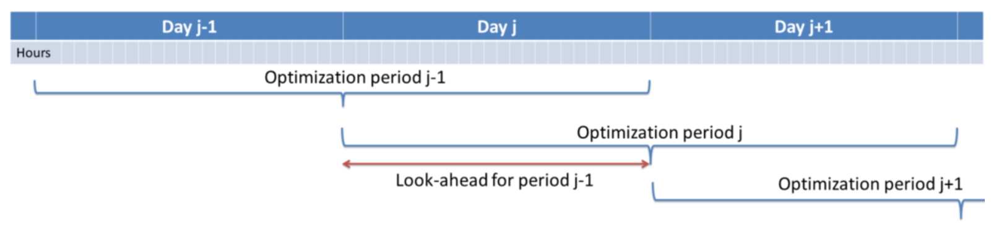

Model Description¶
The model is expressed as a MILP or LP problem. Continuous variables include the individual unit dispatched power, the shedded load and the curtailed power generation. The binary variables are the commitment status of each unit. The main model features can be summarized as follows:
Variables¶
Sets¶
| Name | Description |
|---|---|
| f | Fuel types |
| h | Hours |
| i | Time step in the current optimization horizon |
| l | Transmission lines between nodes |
| mk | {DA: Day-Ahead, 2U: Reserve up, 2D: Reserve Down} |
| n | Zones within each country (currently one zone, or node, per country) |
| p | Pollutants |
| t | Power generation technologies |
| tr | Renewable power generation technologies |
| u | Units |
| s(u) | Storage units (including hydro reservoirs) |
| chp(u) | CHP units |
Parameters¶
| Name | Units | Description |
|---|---|---|
| AvailabilityFactor(u,i) | % | Percentage of nominal capacity available |
| CHPPowerLossFactor(u) | % | Power loss when generating heat |
| CHPPowerToHeat(u) | % | Nominal power-to-heat factor |
| CHPMaxHeat(chp) | MW | Maximum heat capacity of chp plant |
| CHPType | n.a. | CHP Type |
| CommittedInitial(u) | n.a. | Initial commitment status |
| CostFixed(u) | EUR/h | Fixed costs |
| CostLoadShedding(n,h) | EUR/MWh | Shedding costs |
| CostRampDown(u) | EUR/MW | Ramp-down costs |
| CostRampUp(u) | EUR/MW | Ramp-up costs |
| CostShutDown(u) | EUR/u | Shut-down costs for one unit |
| CostStartUp(u) | EUR/u | Start-up costs for one unit |
| CostVariableH(u,i) | EUR/MWh | Variable costs |
| CostHeatSlack(chp,h) | EUR/MWh | Cost of supplying heat via other means |
| Curtailment(n) | n.a. | Curtailment {binary: 1 allowed} |
| Demand(mk,n,i) | MW | Hourly demand in each zone |
| Efficiency(u) | % | Power plant efficiency |
| EmissionMaximum(n,p) | EUR/tP | Emission limit per zone for pollutant p |
| EmissionRate(u,p) | tP/MW | Emission rate of pollutant p from unit u |
| Fuel(u,f) | n.a. | Fuel type used by unit u {binary: 1 u uses f} |
| HeatDemand(chp,h) | MWh/u | Heat demand profile for chp units |
| K_QuickStart(n) | n.a. | Part of the reserve that can be provided by offline quickstart units |
| LineNode(l,n) | n.a. | Line-zone incidence matrix {-1,+1} |
| LoadShedding(n,h) | MW | Load that may be shed per zone in 1 hour |
| Location(u,n) | n.a. | Location {binary: 1 u located in n} |
| Nunits(u) | n.a. | Number of units inside the cluster |
| OutageFactor(u,h) | % | Outage factor (100 % = full outage) per hour |
| PartLoadMin(u) | % | Percentage of minimum nominal capacity |
| PowerCapacity(u) | MW/u | Installed capacity |
| PowerInitial(u) | MW/u | Power output before initial period |
| PowerMinStable(u) | MW/u | Minimum power for stable generation |
| PowerMustRun(u) | MW | Minimum power output |
| PriceTransmission(l,h) | EUR/MWh | Price of transmission between zones |
| QuickStartPower(u,h) | MW/h/u | Available max capacity for tertiary reserve |
| RampDownMaximum(u) | MW/h/u | Ramp down limit |
| RampShutDownMaximum(u) | MW/h/u | Shut-down ramp limit |
| RampStartUpMaximum(u) | MW/h/u | Start-up ramp limit |
| RampUpMaximum(u) | MW/h/u | Ramp up limit |
| Reserve(t) | n.a. | Reserve provider {binary} |
| StorageCapacity(s) | MWh/u | Storage capacity (reservoirs) |
| StorageChargingCapacity(s) | MW/u | Maximum charging capacity |
| StorageChargingEfficiency(s) | % | Charging efficiency |
| StorageDischargeEfficiency(s) | % | Discharge efficiency |
| StorageInflow(s,h) | MWh/u | Storage inflows |
| StorageInitial(s) | MWh | Storage level before initial period |
| StorageMinimum(s) | MWh/u | Minimum storage level |
| StorageOutflow(s,h) | MWh/u | Storage outflows (spills) |
| StorageProfile(u,h) | MWh | Storage long-term level profile |
| Technology(u,t) | n.a. | Technology type {binary: 1: u belongs to t} |
| TimeDownMinimum(u) | h | Minimum down time |
| TimeUpMinimum(u) | h | Minimum up time |
| VOLL() | EUR/MWh | Value of lost load |
NB: When the parameter is expressed per unit (“/u”), its value must be provided for one single unit (even in the case of a clustered formulation).
Optimization Variables¶
| Name | Units | Description |
|---|---|---|
| Committed(u,h) | n.a. | Unit committed at hour h {1,0} |
| CostStartUpH(u,h) | EUR | Cost of starting up |
| CostShutDownH(u,h) | EUR | Cost of shutting down |
| CostRampUpH(u,h) | EUR | Ramping cost |
| CostRampDownH(u,h) | EUR | Ramping cost |
| CurtailedPower(n,h) | MW | Curtailed power at node n |
| Flow(l,h) | MW | Flow through lines |
| Heat(chp,h) | MW | Heat output by chp plant |
| HeatSlack(chp,h) | MW | Heat satisfied by other sources |
| Power(u,h) | MW | Power output |
| PowerMaximum(u,h) | MW | Power output |
| PowerMinimum(u,h) | MW | Power output |
| Reserve_2U(u,h) | MW | Spinning reserve up |
| Reserve_2D(u,h) | MW | Spinning reserve down |
| Reserve_3U(u,h) | MW | Non spinning quick start reserve up |
| ShedLoad(n,h) | MW | Shed load |
| StorageInput(s,h) | MWh | Charging input for storage units |
| StorageLevel(s,h) | MWh | Storage level of charge |
| Spillage(s,h) | MWh | Spillage from water reservoirs |
| SystemCost(h) | EUR | Total system cost |
| LL_MaxPower(n,h) | MW | Deficit in terms of maximum power |
| LL_RampUp(u,h) | MW | Deficit in terms of ramping up for each plant |
| LL_RampDown(u,h) | MW | Deficit in terms of ramping down |
| LL_MinPower(n,h) | MW | Power exceeding the demand |
| LL_2U(n,h) | MW | Deficit in reserve up |
| LL_3U(n,h) | MW | Deficit in reserve up - non spinning |
| LL_2D(n,h) | MW | Deficit in reserve down |
Integer Variables¶
| Name | Units | Description |
|---|---|---|
| Committed(u,h) | n.a. | Number of unit committed at hour h {1 0} or integer |
| StartUp(u,h) | n.a. | Number of unit startups at hour h {1 0} or integer |
| ShutDown(u,h) | n.a. | Number of unit shutdowns at hour h {1 0} or integer |
Optimisation model¶
The aim of this model is to represent with a high level of detail the short-term operation of large-scale power systems solving the so-called unit commitment problem. To that aim we consider that the system is managed by a central operator with full information on the technical and economic data of the generation units, the demands in each node, and the transmission network.
The unit commitment problem considered in this report is a simplified instance of the problem faced by the operator in charge of clearing the competitive bids of the participants into a wholesale day-ahead power market. In the present formulation the demand side is an aggregated input for each node, while the transmission network is modelled as a transport problem between the nodes (that is, the problem is network-constrained but the model does not include the calculation of the optimal power flows).
The unit commitment problem consists of two parts: i) scheduling the start-up, operation, and shut down of the available generation units, and ii) allocating (for each period of the simulation horizon of the model) the total power demand among the available generation units in such a way that the overall power system costs is minimized. The first part of the problem, the unit scheduling during several periods of time, requires the use of binary variables in order to represent the start-up and shut down decisions, as well as the consideration of constraints linking the commitment status of the units in different periods. The second part of the problem is the so-called economic dispatch problem, which determines the continuous output of each and every generation unit in the system. Therefore, given all the features of the problem mentioned above, it can be naturally formulated as a mixed-integer linear program (MILP).
Since our goal is to model a large European interconnected power system, we have implemented a so-called tight and compact formulation, in order to simultaneously reduce the region where the solver searches for the solution and increase the speed at which the solver carries out that search. Tightness refers to the distance between the relaxed and integer solutions of the MILP and therefore defines the search space to be explored by the solver, while compactness is related to the amount of data to be processed by the solver and thus determines the speed at which the solver searches for the optimum. Usually tightness is increased by adding new constraints, but that also increases the size of the problem (decreases compactness), so both goals contradict each other and a trade-off must be found.
Objective function¶
The goal of the unit commitment problem is to minimize the total power system costs (expressed in EUR in equation ), which are defined as the sum of different cost items, namely: start-up and shut-down, fixed, variable, ramping, transmission-related and load shedding (voluntary and involuntary) costs.
The costs can be broken down as:
- Fixed costs: depending on whether the unit is on or off.
- Variable costs: stemming from the power output of the units.
- Start-up costs: due to the start-up of a unit.
- Shut-down costs: due to the shut-down of a unit.
- Ramp-up: emerging from the ramping up of a unit.
- Ramp-down: emerging from the ramping down of a unit.
- Load shed: due to necessary load shedding.
- Transmission: depending of the flow transmitted through the lines.
- Loss of load: power exceeding the demand or not matching it, ramping and reserve.
The variable production costs (in EUR/MWh), are determined by fuel and emission prices corrected by the efficiency (which is considered to be constant for all levels of output in this version of the model) and the emission rate of the unit (equation ):
The variable cost includes an additional mark-up parameter that can be used for calibration and validation purposes.
From version 2.3, Dispa-SET uses a 3 integers formulations of the up/down status of all units. According to this formulation, the number of start-ups and shut-downs is at each time step is computed by:
The start-up and shut-down costs are positive variables, calculated from the number of startups/shutdowns at each time step:
Ramping costs are defined as positive variables (i.e. negative costs are not allowed) and are computed with the following equations:
It should be noted that in case of start-up and shut-down, the ramping costs are added to the objective function. Using start-up, shut-down and ramping costs at the same time should therefore be performed with care.
In the current formulation, all other costs (fixed and variable costs, transmission costs, load shedding costs) are considered as exogenous parameters.
As regards load shedding, the model considers the possibility of voluntary load shedding resulting from contractual arrangements between generators and consumers. Additionally, in order to facilitate tracking and debugging of errors, the model also considers some variables representing the capacity the system is not able to provide when the minimum/maximum power, reserve, or ramping constraints are reached. These lost loads are a very expensive last resort of the system used when there is no other choice available. The different lost loads are assigned very high values (with respect to any other costs). This allows running the simulation without infeasibilities, thus helping to detect the origin of the loss of load. In a normal run of the model, without errors, all these variables are expected to be equal to zero.
Day-ahead energy balance¶
The main constraint to be met is the supply-demand balance, for each period and each zone, in the day-ahead market (equation ). According to this restriction, the sum of all the power produced by all the units present in the node (including the power generated by the storage units), the power injected from neighbouring nodes, and the curtailed power from intermittent sources is equal to the load in that node, plus the power consumed for energy storage, minus the load interrupted and the load shed.
Reserve constraints¶
Besides the production/demand balance, the reserve requirements (upwards and downwards) in each node must be met as well. In Dispa-SET, three types of reserve requirements are taken into account:
- Upward secondary reserve (2U): reserve that can only be covered by spinning units
- Downward secondary reserve (2D): reserve that can only be covered by spinning units
- Upward tertiary reserve (3U): reserve that can be covered either by spinning units or by quick-start offline units
The secondary reserve capability of committed units is limited by the capacity margin between current and maximum power output:
The same applies to the downwards secondary reserve capability, with an additional term to take into account the downard reserve capability of pumping storage units:
The quick start (non-spining) reserve capability is given by:
The secondary reserve demand should be fulfilled at all times by all the plants allowed to participate in the reserve market:
The same equation applies to downward reserve requirements (2D).
The tertiary reserve can also be provided by non-spinning units. The inequality is thus transformed into:
The reserve requirements are defined by the users. In case no input is provided a default formula is used to evaluate the needs for secondary reserves as a function of the maximum expected load for each day. The default formula is described by:
Downward reserves are defined as 50% of the upward margin:
Power output bounds¶
The minimum power output is determined by the must-run or stable generation level of the unit if it is committed:
In the particular case of CHP unit (extration type or power-to-heat type), the minimum power is defined for for a heat demand equal to zero. If the unit produces heat, the minimum power must be reduced according to the power loss factor and the previous equation is replaced by:
The power output is limited by the available capacity, if the unit is committed:
The availability factor is used for renewable technologies to set the maximum time-dependent generation level. It is set to one for the traditional power plants. The outage factor accounts for the share of unavailable power due to planned or unplanned outages.
Ramping Constraints¶
Each unit is characterized by a maximum ramp up and ramp down capability. This is translated into the following inequality for the case of ramping up:
and for the case of ramping down:
Note that this formulation is valid for both the clustered formulation and the binary formulation. In the latter case (there is only one unit u), if the unit remains committed, the inequality simplifies into:
If the unit has just been committed, the inequality becomes:
And if the unit has just been stopped:
Minimum up and down times¶
The operation of the generation units is also limited as well by the amount of time the unit has been running or stopped. In order to avoid excessive ageing of the generators, or because of their physical characteristics, once a unit is started up, it cannot be shut down immediately. Reciprocally, if the unit is shut down it may not be started immediately.
To model this in MILP, the number of startups/shutdowns in the last N hours must be limited, N being the minimum up or down time. For the minimum up time, the number of startups during this period cannot be higher than the number of currently committed units:
i.e. the currently committed units are not allowed to have performed multiple on/off cycles during the last TimeUpMinimum periods. In case of a binary formulation (Nunits=1), if the unit is ON at time i, only one startup is allowed in the last TimeUpMinimum periods. If the unit is OFF at time i, no startup is allowed.
A similar inequality can be written for the ninimum down time:
Heat production constraints (CHP plants only)¶
In DispaSET Power plants can be indicated as CHP satisfying one heat demand. Heat Demand can be covered either by a CHP plant or by alternative heat supply options (Heat Slack).

The following two heat balance constraints are used for any CHP plant type.
The constraints between heat and power production differ for each plant design and explained within the following subsections.
Steam plants with Backpressure turbine¶
This options includes steam-turbine based power plants with a backpressure turbine. The feasible operating region is between AB. The slope of the line is the heat to power ratio.
{kind=link}
Steam plants with Extraction/condensing turbine¶
This options includes steam-turbine based power plants with an extraction/condensing turbine. The feasible operating region is within ABCDE. The vertical dotted line BC corresponds to the minimum condensation line (as defined by CHPMaxHeat). The slope of the DC line is the heat to power ratio and the slope of the AB line is the inverse of the power penalty ratio.

Power plant coupled with any power to heat option¶
This option includes power plants coupled with resistance heater or heat pumps. The feasible operating region is between ABCD. The slope of the AB and CD line is the inverse of the COP or efficiency. The vertical dotted line corresponds to the heat pump (or resistance heater) thermal capacity (as defined by CHPMaxHeat)

Heat Storage¶
Heat storage is modeled in a similar way as electric storage as follows:
Heat Storage balance:
Storage level must be above a minimum and below storage capacity:
Emission limits¶
The operating schedule also needs to take into account any cap on the emissions (not only CO2) from the generation units existing in each node:
It is important to note that the emission cap is applied to each optimisation horizon: if a rolling horizon of one day is adopted for the simulation, the cap will be applied to all days instead of the whole year.
Curtailment¶
If curtailment of intermittent generation sources is allowed in one node, the amount of curtailed power is bounded by the output of the renewable (tr) units present in that node:
Load shedding¶
If load shedding is allowed in a node, the amount of shed load is limited by the shedding capacity contracted on that particular node (e.g. through interruptible industrial contracts)
Rolling Horizon¶
The mathematical problem described in the previous sections could in principle be solved for a whole year split into time steps of one hour, but with all likelihood the problem would become extremely demanding in computational terms when attempting to solve the model with a realistically sized dataset. Therefore, the problem is split into smaller optimization problems that are run recursively throughout the year.
The following figure shows an example of such approach, in which the optimization horizon is one day, with a look-ahead (or overlap) period of one day. The initial values of the optimization for day j are the final values of the optimization of the previous day. The look-ahead period is modelled to avoid issues related to the end of the optimization period such as emptying the hydro reservoirs, or starting low-cost but non-flexible power plants. In this case, the optimization is performed over 48 hours, but only the first 24 hours are conserved.
Although the previous example corresponds to an optimization horizon and an overlap of one day, these two values can be adjusted by the user in the Dispa-SET configuration file. As a rule of thumb, the optimization horizon plus the overlap period should as least twice the maximum duration of the time-dependent constraints (e.g. the minimum up and down times). In terms of computational efficiency, small power systems can be simulated with longer optimization horizons, while larger systems should reduce this horizon, the minimum being one day.
References¶
| [1] | Quoilin, S., Hidalgo Gonzalez, I., & Zucker, A. (2017). Modelling Future EU Power Systems Under High Shares of Renewables: The Dispa-SET 2.1 open-source model. Publications Office of the European Union. |
| [2] | Quoilin, S., Nijs, W., Hidalgo, I., & Thiel, C. (2015). Evaluation of simplified flexibility evaluation tools using a unit commitment model. IEEE Digital Library. |
| [3] | Quoilin, S., Gonzalez Vazquez, I., Zucker, A., & Thiel, C. (2014). Available technical flexibility for balancing variable renewable energy sources: case study in Belgium. Proceedings of the 9th Conference on Sustainable Development of Energy, Water and Environment Systems. |